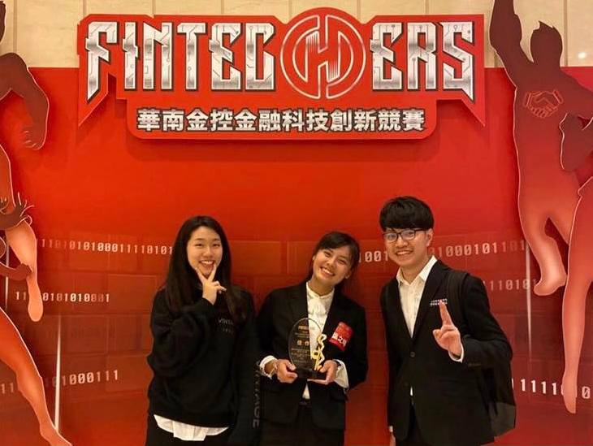
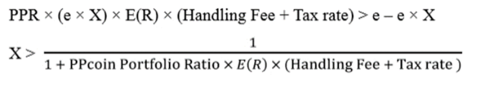
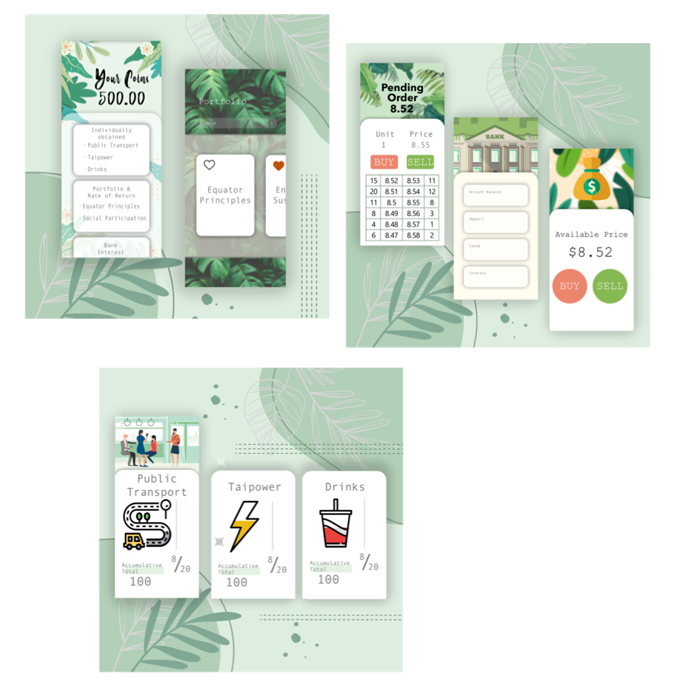

全國佳作
華南金控第四屆金融科技創新競賽 - API實證組
(5th/300+)

創新構想
PPcoin 的宗旨在打破永續與金融為抵換關係的框架,及追求自然與經濟的共同發展。本產 品之獨特之處在於,建立系統化且適用於各產業的一致性「通式」,落實普惠金融的精神:
- Business Model－透過永續行為進行 mining，帶動責任投資與永續消費。
- Financial Model－以永續行為進行 mining，建立「通式」並設算優惠與支出後的PPcoin 轉換率。
- 民眾可以透過日常的生活行為 mining 取得 PPcoin，並利用簡易的 APP 操作介面享受產品服務，落實普惠金融精神。
- 透過華南「證券交易行為分析 API」取得客戶資料，分析客戶之風險偏好，參考其 Beta眾數，建構以「赤道原則、環境永續、責任科技」為核心之指數追蹤責任投資組合。
- 設算 SROI 社會投資報酬率，以及塑膠廢棄物及碳排放的減少量。
產品服務
PPcoin 以永續的經濟發展為核心理念，因此本產品以「永續行為從事責任投資」與「永續行為從事永續消費」為主軸，設計下列產品服務內容：
一、建構責任投資組合
透過華南金控所提供之「證券交易行為分析 API」，隨機抽樣逾 1500 戶使用者的交易資料，分析 2016 年至 2018 年之投資行為，取得華南客戶投資組合排序前四之 Beta 眾數，其分別為：0.45、0.66、0.82、 1.34，採用歷史資料計算投資人之風險偏好 （Beta），並以天下雜誌公布之 2019 百大 CSR 企業為基礎，根據其 Beta 建立四檔以「赤道原則、社會參與、環境永續、責任科技」為核心之投資組合。此外，透過提供於本平台投資的投資人之免手續費與稅額（0.585%）的優惠，進而吸引顧客。
二、掛單及交易平台
民眾可以透過取得之 PPcoin 以下列兩種方式進行買賣交易。
- 賣方可於平台上進行掛單，與買方依「市價」進行媒合交易。
- 買賣雙方可直接向項目方買賣 PPcoin。
三、支付能源消費
民眾可以依市價於平台繳交電費，以增加民眾透過節能 mining 之意願，同時給予 2%之優惠，PPcoin 價格之波動風險由項目方承擔，藉此鼓勵民眾透過永續行為從事交易。
技術能力

為了建構完整的永續幣生態鏈，本產品設計三層系統架構，如上圖，使用者的活動紀錄都會 被搜集並安全的存放在伺服器及區塊鏈中。我們在 Google Cloud Platform 中託管永續幣 系統主要伺服器，作為資料儲存中心以及開放資料的存取中繼。Google Cloud Platform 在 Google 網域下提供安全的網路防護、資料完整性及系統執行的可靠性。其中主要的作業分 為四個部分：資料庫存取；推估投資組合的非監督式學習模型；Fintech API 及中華電信區 塊鏈服務 (Blockchain as a Service, BaaS)等開放資料的存取引擎；金流及投資交易系統， 這些系統提供了永續幣生態鏈的完整服務及安全性。以安全性為例，系統中我們將使用者的 帳戶資料拆分為兩個部分：資料（Metadata） 與交易（Transaction），分別存放主伺服器 及中華電信區塊鏈服務中，避免集中式的資料管理餘額等遭到惡意人士攻擊或竄改。
市場分析
一、mining 模式
Financial Model 本產品以永續概念出發，設計出以下適用於各產業通式 Financial：
二、市場價值
永續行為是目前許多民眾生活的一部份，PPcoin 讓民眾可以將這些行為之市場價值進行量 化並藉此獲利，達到追求永續同時促進金融發展的目標。本產品的目標客群為大眾運輸通勤 族、手搖飲料杯年輕客群、家計用電戶，同時配合台電節電優惠與飲料減塑優惠的方式進入 市場，市場總體價值達 2,948,656,000 元。根據台電資料與「消費者飲料消費習慣」問卷統 計結果，PPcoin 具備巨幅的成長動能，其中家計用電戶有 550 萬戶之成長空間，自備環保 杯之比例有望由 12.7%成長至 53.2%。
成果畫面

活動照片
{kind=link}
{kind=link}
{kind=link}
其他
2019年的華南金控第四屆金融科技創新競賽，本團隊於此比賽中的API組獲得佳作（5th/300+），非常感謝我的團隊與指導老師。
若您有興趣參考完整資料，可於如下取得我們的比賽報告書，謝謝。